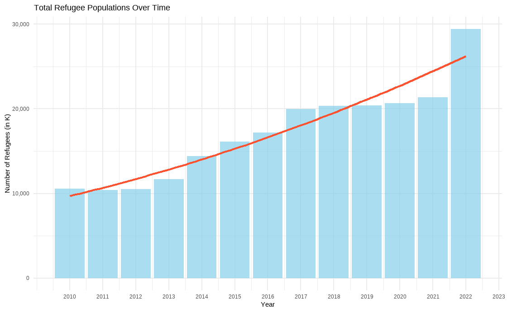
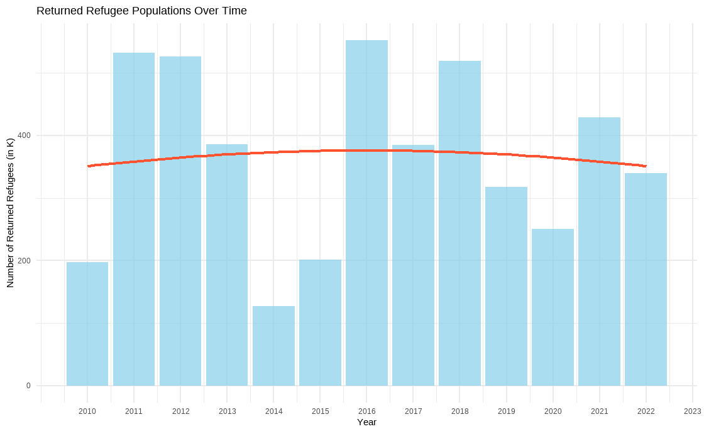

total_refugee_trends <- population_data %>%
group_by(year) %>%
summarise(total_refugees = sum(refugees, na.rm = TRUE) / 1000) title: “Examining Global Refugee Trends and Correlations Over the Years” subtitle: “INFO 526 - Fall 2023 - Project 1” author: “Datatude Dynamos -Surya Vardhan Dama, Ayesha Khatun, Mrunali Yadav” title-slide-attributes: data-background-image: images/watercolour_sys02_img34_teacup-ocean.jpg data-background-size: stretch data-background-opacity: “0.7” data-slide-number: none format: revealjs: theme: [‘data/customtheming.scss’]
editor: visual execute: echo: false
Our Dataset
Our target dataset comes from the {refugees} R package, which compiles extensive information on populations that have been strongly displaced from three main sources: UNHCR, UNRWA, and IDMC.
- “Refugees” dataset from tidytuesday.
Question 01
How have the patterns in refugee populations evolved over time, and how have the stances of American political parties impacted these developments? Analyse the dynamics of refugee migrations towards US political environments.
The presentation is created using the Quarto CLI
##sets the start of a new slide
Data Preparation and Pre-processing
- Using the R dplyr package
- First aggregate our data by year before summarizing the overall number of refugees
- Making sure to divide these totals into thousands for easier comprehension.
Analysis 01: Refugee populations over time
- Expeditious growth of the refugee population over time
- A small number of refugees have returned over a period of time


Question 02
How the global refugee population fluctuate across the countries? Is their any external factors impact on refugee population like COVID-19 or war or climate change or financial stability?
Layouts
You can use plain text
- or bullet points1
or in two columns
like
this
Code
Plots
Plot and text
Some text
goes here
A new section…
Tables
If you want to generate a table, make sure it is in the HTML format (instead of Markdown or other formats), e.g.,
Images

Math Expressions
You can write LaTeX math expressions inside a pair of dollar signs, e.g. $\alpha+\beta$ renders \(\alpha + \beta\). You can use the display style with double dollar signs:
$$\bar{X}=\frac{1}{n}\sum_{i=1}^nX_i$$\[ \bar{X}=\frac{1}{n}\sum_{i=1}^nX_i \]
Limitations:
The source code of a LaTeX math expression must be in one line, unless it is inside a pair of double dollar signs, in which case the starting
$$must appear in the very beginning of a line, followed immediately by a non-space character, and the ending$$must be at the end of a line, led by a non-space character;There should not be spaces after the opening
$or before the closing$.
Wrap up
Feeling adventurous?
You are welcomed to use the default styling of the slides. In fact, that’s what I expect majority of you will do. You will differentiate yourself with the content of your presentation.
But some of you might want to play around with slide styling. Some solutions for this can be found at https://quarto.org/docs/presentations/revealjs.
Footnotes
And add footnotes↩︎